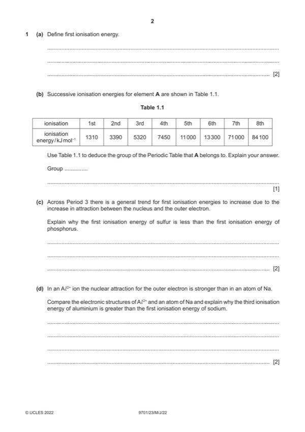

Question 1

Original paper page 2
Part 1(a) — solution
- energy required 2
- when one electron is removed
- from each atom in one mole of
- gaseous atoms
Mark points
- energy required 2
- when one electron is removed
- from each atom in one mole of
- gaseous atoms
Part 1(b) — solution
Group VI / 16 AND large increase (in IE) after 6th 1
Mark points
- Include the ideas shown in the solution above.
Part 1(c) — solution
Answer: OR due to repulsion of two electrons in a (3)p orbital (in S)
- [M1] reference to spin pair repulsion in (3)p orbital (in S) 2
- [M2] outweighs increased nuclear charge (in S)
Mark points
- [M1] reference to spin pair repulsion in (3)p orbital (in S) 2
- [M2] outweighs increased nuclear charge (in S)
Part 1(d) — solution
Answer: OR Al2+ and Na have same electronic configuration · OR shielding (of outer electron) is the same · OR 13p compared to 11p
- [M1] similarity in electronic structure / shielding of Al2+ and Na 2
- [M2] greater nuclear charge / number of protons
Mark points
- [M1] similarity in electronic structure / shielding of Al2+ and Na 2
- [M2] greater nuclear charge / number of protons
Part 1(e) — solution
Answer: 3
- [M1] 29 AND 65
- [M2] nucleon no – atomic no
- [M1] Obtain/use: ALLOW ecf from
- [M3] electronic arrangement
Mark points
- [M1] 29 AND 65
- [M2] nucleon no – atomic no
- [M1] Obtain/use: ALLOW ecf from
- [M3] electronic arrangement
Part 1(f)(i) — solution
- Mr = 63.5 1
- (1.05 / 63.5) 6.022 1023 = 9.958 1021 OR 9.96 1021
Mark points
- Mr = 63.5 1
- (1.05 / 63.5) 6.022 1023 = 9.958 1021 OR 9.96 1021
Part 1(f)(ii) — solution
Answer: OR many strong (electrostatic) attractions between cations and delocalised electrons · OR strong bonds in giant metallic structure.
- [M1] comment explaining high melting point of Cu 2
- [M2] comment explaining electrical conductivity of Cu
Mark points
- [M1] comment explaining high melting point of Cu 2
- [M2] comment explaining electrical conductivity of Cu